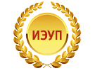

Прием
Прием на дистанционную форму обучения осуществляется в течение года (Решение Ученого совета ИЭУП от 05.09.2006г.)
Зачисление на дистанционную форму обучения ИЭУП производится приказом ректора. Обучение платное. Стоимость обучения и порядок оплаты (по полугодиям) определяются приказом ректора и фиксируются в договоре. При комплектовании полных групп занятия начинаются с 1 сентября и 1 февраля.
Абитуриент считается принятым в ИДО ИЭУП после прохождения испытательного экзамена (ЕГЭ или собеседование) и оплаты обучения.
Документы, необходимые при поступлении:
- заявление (форма в приемной комиссии);
- аттестат или диплом с приложением;
- 6 фотографий черно-белого цвета (3х4) с уголком;
- ксерокопия паспорта;
- дополнительно: Индивидуальная программа реабилитации (для лиц с ограниченными физическими возможностями);
Специальности
По направлениям бакалавриата высшего профессионального образования:
Сроки обучения:
5 лет - на базе среднего (полного) общего образования,
3 года - сокращенные сроки обучения для лиц с высшим и профильным средним профессиональным образованием
- Экономика (профили: Финансы и кредит, Бухгалтерский учет, анализ и аудит, Налоги и налогообложение)
- Менеджмент (профили: Маркетинг, Логистика и управление цепями поставок, Управление человеческими ресурсами, Финансовый менеджмент, Производственный менеджмент)
- Государственное и муниципальное управление
- Юриспруденция (профили: Гражданско-правовой, Уголовно-правовой, Финансово-правовой)
- Туризм
- Сервис
- Гостиничное дело
- Торговое дело
- Реклама и связи с общественностью
- Психология
- Педагогическое образование (профили: Начальное образование, Управление образованием, Социальная педагогика и др.)
- Психолого-педагогическое образование
- Специальное (дефектологическое) образование
- Прикладная информатика
- Бизнес информатика
- Информационная безопасность
- Управление качеством
- Техносферная безопастность
- Экология и природопользование
Среднего профессионального образования (колледж):
Сроки обучения:
3 года 10 мес. - на базе 9 кл.,
2 года 10 мес. - на базе 11 кл.
- Экономика и бухгалтерский учет (по отраслям)
- Гостиничный сервис
- Туризм
- Коммерция
- Право и организация социального обеспечения
Сроки обучения:
4 года 10 мес. - на базе 9 кл.,
3 года 10 мес. - на базе 11 кл.
- Дошкольное образование
- Прикладная информатика (по отраслям)
- Рациональное использование природохозяйственных комплексов
- Техническое регулирование и управление качеством
Развернутый список специальностей
| Направления подготовки | Форма обучения | Сроки обучения | Вступительные испытания* |
| Направление бакалавриата 080100.62 ЭКОНОМИКА профили: 1. Финансы и кредит, 2. Бухгалтерский учет, анализ и аудит, 3. Налоги и налогообложение |
Очная (на базе 11 классов или начального профессионального образования) | 4 года | 1. Русский язык, 2. Математика, 3.Обществознание или Иностранный язык |
| Вечерняя, заочная, заочная с применением дистанционных технологий (на базе 11 классов, начального профессионального образования) | 5 лет | ||
| Очная, вечерняя, заочная, заочная с применением дистанционных технологий (на базе профильного среднего профессионального или высшего образования) | 3-3,5 года | Собеседование по профилю направления | |
| Направление магистратуры 080100.68 ЭКОНОМИКА | Очная (на базе высшего профессионального образования (диплом бакалавра, специалиста или магистра)) | 2 года | Экзамен по профилю направления подготовки |
| Заочная (на базе высшего профессионального образования (диплом бакалавра, специалиста или магистра)) | 2,5 года | Экзамен по профилю направления подготовки | |
| Направление бакалавриата 230700.62 ПРИКЛАДНАЯ ИНФОРМАТИКА профиль: 1. Прикладная информатика в экономике |
Очная (на базе 11 классов, начального профессионального образования) | 4 года | 1. Русский язык, 2. Математика, 3. Физика или Информатика |
| Вечерняя, заочная, заочная с применением дистанционных технологий (на базе 11 классов, начального профессионального образования) | 5 лет | ||
| Очная, вечерняя, заочная, заочная с применением дистанционных технологий (на базе профильного среднего профессионального или высшего образования) | 3-3,5 года | Собеседование по профилю направления | |
| Направление бакалавриата 090900.62 ИНФОРМАЦИОННАЯ БЕЗОПАСНОСТЬ Общий профиль |
Очная (на базе 11 классов, начального профессионального образования) | 4 года | 1. Русский язык, 2. Математика, 3. Физика или Информатика |
| Вечерняя, заочная, заочная с применением дистанционных технологий (на базе 11 классов, начального профессионального образования) | 5 лет | ||
| Очная, вечерняя, заочная, заочная с применением дистанционных технологий (на базе профильного среднего профессионального или высшего образования) | 3-3,5 года | Собеседование по профилю направления | |
| Направление бакалавриата 080500.62 БИЗНЕС-ИНФОРМАТИКА Общий профиль |
Очная (на базе 11 классов, начального профессионального образования) | 4 года | 1. Русский язык, 2. Математика, 3.Обществознание или Иностранный язык |
| Вечерняя, заочная, заочная с применением дистанционных технологий (на базе 11 классов, начального профессионального образования) | 5 лет | ||
| Очная, вечерняя, заочная, заочная с применением дистанционных технологий (на базе профильного среднего профессионального или высшего образования) | 3-3,5 года | Собеседование по профилю направления | |
| Направление бакалавриата 080200.62 МЕНЕДЖМЕНТ профили: 1. Финансовый менеджмент 2. Логистика и управление цепями поставок 3. Маркетинг 4. Производственный менеджмент 5. Управление человеческими ресурсами 6. Менеджмент организации |
Очная (на базе 11 классов, начального профессионального образования) | 4 года | 1. Русский язык, 2. Математика, 3.Обществознание или Иностранный язык |
| Вечерняя, заочная, заочная с применением дистанционных технологий (на базе 11 классов, начального профессионального образования) | 5 лет | ||
| Очная, вечерняя, заочная, заочная с применением дистанционных технологий (на базе профильного среднего профессионального или высшего образования) | 3-3,5 года | Собеседование по профилю направления | |
| Направление магистратуры 080200.68 МЕНЕДЖМЕНТ | Очная (на базе высшего профессионального образования (диплом бакалавра, специалиста или магистра)) | 2 года | Экзамен по профилю направления подготовки |
| Заочная (на базе высшего профессионального образования (диплом бакалавра, специалиста или магистра)) | 2,5 года | Экзамен по профилю направления подготовки | |
| Направление бакалавриата 081100.62 ГОСУДАРСТВЕННОЕ И МУНИЦИПАЛЬНОЕ УПРАВЛЕНИЕ Общий профиль |
Очная (на базе 11 классов, начального профессионального образования) | 4 года | 1. Русский язык, 2. Математика, 3.Обществознание или Иностранный язык |
| Вечерняя, заочная, заочная с применением дистанционных технологий (на базе 11 классов, начального профессионального образования) | 5 лет | ||
| Очная, вечерняя, заочная, заочная с применением дистанционных технологий (на базе профильного среднего профессионального или высшего образования) | 3-3,5 года | Собеседование по профилю направления | |
| Направление магистратуры 081100.68 ГОСУДАРСТВЕННОЕ И МУНИЦИПАЛЬНОЕ УПРАВЛЕНИЕ |
Очная (на базе высшего профессионального образования (диплом бакалавра, специалиста или магистра)) | 2 года | Экзамен по профилю направления подготовки |
| Заочная (на базе высшего профессионального образования (диплом бакалавра, специалиста или магистра)) | 2,5 года | Экзамен по профилю направления подготовки | |
| Направление бакалавриата 100100.62 СЕРВИС профили: 1. Социально-культурный сервис, 2. Сервис инженерных систем гостинично-ресторанных, туристических и спортивных комплексов |
Очная (на базе 11 классов, начального профессионального образования) | 4 года | 1. Русский язык, 2. Математика, 3.Обществознание или Иностранный язык |
| Вечерняя, заочная, заочная с применением дистанционных технологий (на базе 11 классов, начального профессионального образования) | 5 лет | ||
| Очная, вечерняя, заочная, заочная с применением дистанционных технологий (на базе профильного среднего профессионального или высшего образования) | 3-3,5 года | Собеседование по профилю направления | |
| Направление бакалавриата 100400.62 ТУРИЗМ профили: 1. Технология и организация туроператорских и турагентских услуг, 2. Технология и организация услуг питания |
Очная (на базе 11 классов, начального профессионального образования) | 4 года | 1. Русский язык, 2. История, 3.Обществознание или География |
| Вечерняя, заочная, заочная с применением дистанционных технологий (на базе 11 классов, начального профессионального образования) | 5 лет | ||
| Очная, вечерняя, заочная, заочная с применением дистанционных технологий (на базе профильного среднего профессионального или высшего образования) | 3-3,5 года | Собеседование по профилю направления | |
| Направление бакалавриата 101100.62 ГОСТИНИЧНОЕ ДЕЛО Общий профиль |
Очная (на базе 11 классов, начального профессионального образования) | 4 года | 1. Русский язык, 2.Обществознание 3. История или Иностранный язык |
| Вечерняя, заочная, заочная с применением дистанционных технологий (на базе 11 классов, начального профессионального образования) | 5 лет | ||
| Очная, вечерняя, заочная, заочная с применением дистанционных технологий (на базе профильного среднего профессионального или высшего образования) | 3-3,5 года | Собеседование по профилю направления | |
| Направление бакалавриата 100700.62 ТОРГОВОЕ ДЕЛО Общий профиль |
Очная (на базе 11 классов, начального профессионального образования) | 4 года | 1. Русский язык, 2. Математика, 3.Обществознание или Иностранный язык |
| Вечерняя, заочная, заочная с применением дистанционных технологий (на базе 11 классов, начального профессионального образования) | 5 лет | ||
| Очная, вечерняя, заочная, заочная с применением дистанционных технологий (на базе профильного среднего профессионального или высшего образования) | 3-3,5 года | Собеседование по профилю направления | |
| Направление бакалавриата 022000.62 ЭКОЛОГИЯ И ПРИРОДОПОЛЬЗОВАНИЕ Общий профиль |
Очная (на базе 11 классов, начального профессионального образования) | 4 года | 1. Русский язык, 2. География, 3. Математика или Биология |
| Вечерняя, заочная, заочная с применением дистанционных технологий (на базе 11 классов, начального профессионального образования) | 5 лет | ||
| Очная, вечерняя, заочная, заочная с применением дистанционных технологий (на базе профильного среднего профессионального или высшего образования) | 3-3,5 года | Собеседование по профилю направления | |
| Направление бакалавриата 221400.62 УПРАВЛЕНИЕ КАЧЕСТВОМ профили: 1. Управление качеством в производственно-технологических системах. 2. Управление качеством в сфере быта и услуг. |
Очная (на базе 11 классов, начального профессионального образования) | 4 года | 1. Русский язык, 2. Математика, 3. Физика или Информатика |
| Вечерняя, заочная, заочная с применением дистанционных технологий (на базе 11 классов, начального профессионального образования) | 5 лет | ||
| Очная, вечерняя, заочная, заочная с применением дистанционных технологий (на базе профильного среднего профессионального или высшего образования) | 3-3,5 года | Собеседование по профилю направления | |
| Направление магистратуры 221400.68 УПРАВЛЕНИЕ КАЧЕСТВОМ | Очная (на базе высшего профессионального образования (диплом бакалавра, специалиста или магистра)) | 2 года | Экзамен по профилю направления подготовки |
| Заочная (на базе высшего профессионального образования (диплом бакалавра, специалиста или магистра)) | 2,5 года | Экзамен по профилю направления подготовки | |
| Направление бакалавриата 280700.62 ТЕХНОСФЕРНАЯ БЕЗОПАСНОСТЬ Общий профиль |
Очная (на базе 11 классов, начального профессионального образования) | 4 года | 1. Русский язык, 2. Математика, 3. Физика или Химия |
| Вечерняя, заочная, заочная с применением дистанционных технологий (на базе 11 классов, начального профессионального образования) | 5 лет | ||
| Очная, вечерняя, заочная, заочная с применением дистанционных технологий (на базе профильного среднего профессионального или высшего образования) | 3-3,5 года | Собеседование по профилю направления | |
| Направление бакалавриата 072500.62 ДИЗАЙН профиль: Дизайн среды |
Очная (на базе 11 классов, начального профессионального образования) | 4 года | 1. Русский язык, 2. Литература, 3. Творческий экзамен (рисунок) |
| Вечерняя (на базе 11 классов, начального профессионального образования) | 5 лет | ||
| Очная, вечерняя (на базе профильного среднего профессионального или высшего образования) | 3-3,5 года | Собеседование по профилю направления | |
| Направление бакалавриата 035700.62 ЛИНГВИСТИКА профиль: Перевод и переводоведение профиль: Теория и методика преподавания иностранных языков и культур |
Очная (на базе 11 классов, начального профессионального образования) | 4 года | 1. Русский язык, 2. Иностранный язык, 3. История или Литература |
| Вечерняя (на базе 11 классов, начального профессионального образования) | 5 лет | ||
| Очная, вечерняя (на базе профильного среднего профессионального или высшего образования) | 3-3,5 года | Собеседование по профилю направления | |
| Направление бакалавриата 030900.62 ЮРИСПРУДЕНЦИЯ профили: 1. Гражданско-правовой 2. Уголовно-правовой 3. Финансово-правовой |
Очная (на базе 11 классов, начального профессионального образования) | 4 года | 1. Русский язык, 2.Обществознание, 3. История или Иностранный язык |
| Вечерняя, заочная, заочная с применением дистанционных технологий (на базе 11 классов, начального профессионального образования) | 5 лет | ||
| Очная, вечерняя, заочная, заочная с применением дистанционных технологий (на базе профильного среднего профессионального или высшего образования) | 3-3,5 года | Собеседование по профилю направления | |
| Направление магистратуры 030900.68 ЮРИСПРУДЕНЦИЯ | Очная (на базе высшего профессионального образования (диплом бакалавра, специалиста или магистра)) | 2 года | Экзамен по профилю направления подготовки |
| Заочная (на базе высшего профессионального образования (диплом бакалавра, специалиста или магистра)) | 2,5 года | Экзамен по профилю направления подготовки | |
| Направление бакалавриата 030300.62 ПСИХОЛОГИЯ профили: 1. Общий профиль 2. Клиническая психология (только заочная сокращенная форма) |
Очная (на базе 11 классов, начального профессионального образования) | 4 года | 1. Русский язык, 2. Биология, 3. Математика или Иностранный язык |
| Вечерняя, заочная, заочная с применением дистанционных технологий (на базе 11 классов, начального профессионального образования) | 5 лет | ||
| Очная, вечерняя, заочная, заочная с применением дистанционных технологий (на базе профильного среднего профессионального или высшего образования) | 3-3,5 года | Собеседование по профилю направления | |
| Направление магистратуры 030300.68 ПСИХОЛОГИЯ | Очная (на базе высшего профессионального образования (диплом бакалавра, специалиста или магистра)) | 2 года | Экзамен по профилю направления подготовки |
| Заочная (на базе высшего профессионального образования (диплом бакалавра, специалиста или магистра)) | 2,5 года | Экзамен по профилю направления подготовки | |
| Направление бакалавриата 050100.62 ПЕДАГОГИЧЕСКОЕ ОБРАЗОВАНИЕ Профили: 1. Начальное образование 2. Дошкольное образование 3. Социальная педагогика 4. Управление образованием |
Очная (на базе 11 классов, начального профессионального образования) | 4 года | 1. Русский язык, 2.Обществознание, 3. Математика или Иностранный язык |
| Вечерняя, заочная, заочная с применением дистанционных технологий (на базе 11 классов, начального профессионального образования) | 5 лет | ||
| Очная, вечерняя, заочная, заочная с применением дистанционных технологий (на базе профильного среднего профессионального или высшего образования) | 3-3,5 года | Собеседование по профилю направления | |
| Направление магистратуры 050100.68 ПЕДАГОГИЧЕСКОЕ ОБРАЗОВАНИЕ |
Очная (на базе высшего профессионального образования (диплом бакалавра, специалиста или магистра)) | 2 года | Экзамен по профилю направления подготовки |
| Заончая (на базе высшего профессионального образования (диплом бакалавра, специалиста или магистра)) | 2,5 года | Экзамен по профилю направления подготовки | |
| Направление бакалавриата 050400.62 ПСИХОЛОГО-ПЕДАГОГИЧЕСКОЕ ОБРАЗОВАНИЕ Профили: Психология и педагогика дошкольного образования Психология и педагогика начального образования Психология и социальная педагогика Психология управления образованием Психологическое консультирование Педагогика и психология творчества Педагогика и психология спорта Юридическая психология и педагогика |
Очная (на базе 11 классов, начального профессионального образования) | 4 года | 1. Русский язык, 2. Биология, 3. Математика илиОбществознание |
| Вечерняя, заочная, заочная с применением дистанционных технологий (на базе 11 классов, начального профессионального образования) | 5 лет | ||
| Очная, вечерняя, заочная, заочная с применением дистанционных технологий (на базе профильного среднего профессионального или высшего образования) | 3-3,5 года | Собеседование по профилю направления | |
| Направление бакалавриата 050700.62 СПЕЦИАЛЬНОЕ (ДЕФЕКТОЛОГИЧЕСКОЕ) ОБРАЗОВАНИЕ Профиль: Психологическое сопровождение образования лиц с нарушениями в развитии |
Очная (на базе 11 классов, начального профессионального образования) | 4 года | 1. Русский язык, 2. Биология, 3. Математика илиОбществознание |
| Вечерняя, заочная, заочная с применением дистанционных технологий (на базе 11 классов, начального профессионального образования) | 5 лет | ||
| Очная, вечерняя, заочная, заочная с применением дистанционных технологий (на базе профильного среднего профессионального или высшего образования) | 3-3,5 года | Собеседование по профилю направления | |
| Направление бакалавриата 031600.62 РЕКЛАМА И СВЯЗИ С ОБЩЕСТВЕННОСТЬЮ Общий профиль |
Очная (на базе 11 классов, начального профессионального образования) | 4 года | 1. Русский язык, 2.Обществознание, 3. История или Иностранный язык |
| Вечерняя, заочная, заочная с применением дистанционных технологий (на базе 11 классов, начального профессионального образования) | 5 лет | ||
| Очная, вечерняя, заочная, заочная с применением дистанционных технологий (на базе профильного среднего профессионального или высшего образования) | 3-3,5 года | Собеседование по профилю направления | |
| Направление бакалавриата 260100.62 ПРОДУКТЫ ПИТАНИЯ ИЗ РАСТИТЕЛЬНОГО СЫРЬЯ Общий профиль |
Очная (на базе 11 классов, начального профессионального образования) | 4 года | 1. Русский язык, 2. Математика, 3. Химия или Физика |
| Вечерняя, заочная (на базе 11 классов, начального профессионального образования) | 5 лет | ||
| Очная, вечерняя, заочная (на базе профильного среднего профессионального или высшего образования) | 3-3,5 года | Собеседование по профилю направления | |
| Направление бакалавриата 260800.62 ТЕХНОЛОГИЯ ПРОДУКЦИИ И ОРГАНИЗАЦИЯ ОБЩЕСТВЕННОГО ПИТАНИЯ Общий профиль |
Очная (на базе 11 классов, начального профессионального образования) | 4 года | 1. Русский язык, 2. Математика, 3. Физика или Химия |
| Вечерняя, заочная (на базе 11 классов, начального профессионального образования) | 5 лет | ||
| Очная, вечерняя, заочная (на базе профильного среднего профессионального или высшего образования) | 3-3,5 года | Собеседование по профилю направления | |
Причины, по которым стоит поступить в ИЭУП
Европейское качество
|  |
Институт входит в число 100 лучших вузов России и награжден золотой медалью «Европейское качество». Ежегодно, по итогам рейтинга вузов России, составляемого Министерством образования и науки РФ, институт входит в двадцатку лучших вузов страны с государственной аккредитацией. |
Перспективы ростаНаши студенты проходят стажировку и практику на ведущих предприятиях республики, России и за рубежом, что позволяет им набрать большой запас теоретических знаний и практических навыков. Также при институте работает кадровое агентство, которое занимается трудоустройством выпускников. |
|
Европейское приложение к дипломуУ наших выпускников есть уникальная возможность получить к основному диплому Европейское приложение! Приложение к диплому разработано по модели, предложенной совместной рабочей группой экспертов Европейской Комиссии, Совета Европы и ЮНЕСКО. Европейское приложение к диплому повышает уровень академической мобильности и мобильности выпускников на международном рынке труда. |
|
Студенческая жизньВ нашем вузе тебя ждет активная студенческая жизнь — КВН, СТЭМы, танцевальные коллективы, музыкальные группы и многое другое! У студентов есть своя студия звукозаписи, видеостудия, продюсерский центр «VIVA». Кроме того, работают спортивные секции и летние лагеря отдыха (в том числе на Черном море). |
|
Научно-образовательный кластерИЭУП стал первым и до сегодняшнего дня единственным негосударственным вузом РТ, вступившим в научно-образовательный кластер в сфере торговли, индустрии гостеприимства, сервиса и услуг Республики Татарстан. Участие института в кластере предоставляет всем своим студентам комплекс непрерывного практико-ориентированного образования, и обеспечивает подготовку высокопрофессиональных и востребованных специалистов, обладающий практическими навыками для данной сферы. |
|
ИЭУП – «Вуз летней Универсиады 2013»Сотрудничество с Дирекцией Универсиады дает возможность студентам и сотрудникам вуза в качестве волонтеров участвовать в мероприятиях, связанных с подготовкой и проведением Универсиады 2013, и, кроме того, подразумевает дальнейшее трудоустройство студентов. |
Полные правила приема